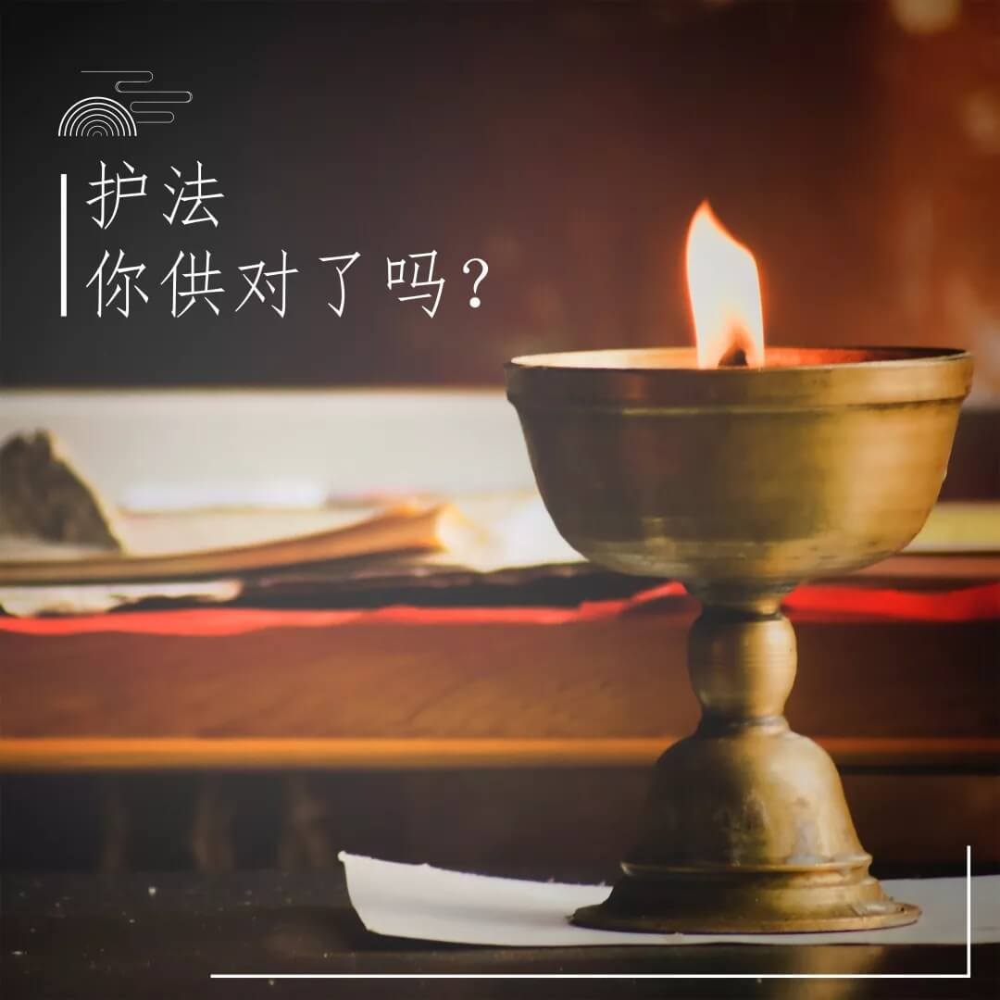
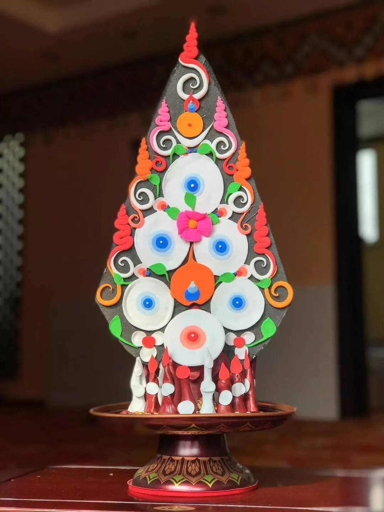
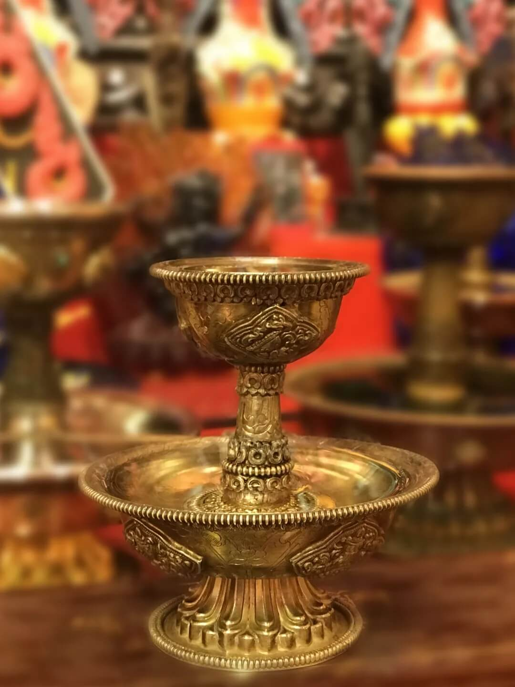
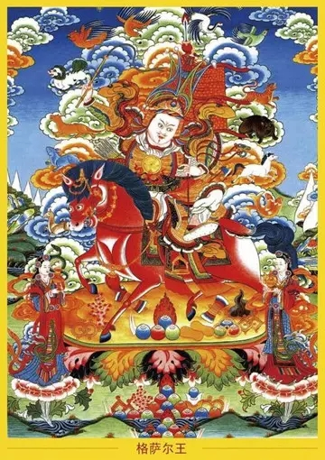
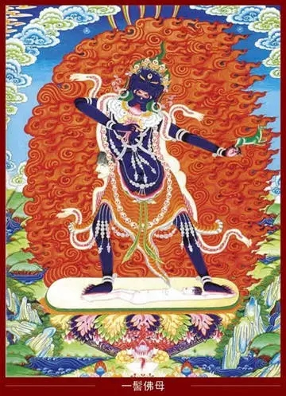
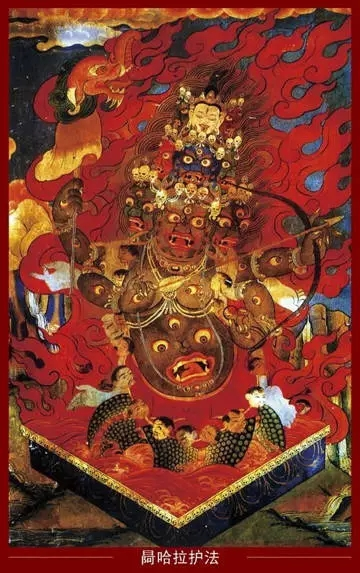
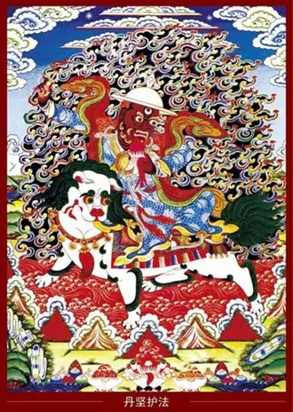
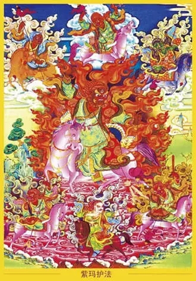

一、开篇
现在很多居士都喜欢供护法，相对于显宗，藏密里护法供的比较多，可是关于供护法的那些事儿，您是否清楚呢？到底应该供什么样的护法？供护法有哪些方法和诀窍？必须要供护法才能得到护持吗？供财神真的能发财吗？

二、分类
密宗，特别是莲花生大师的伏藏法里一再强调，护法有两种：第一种是出世间的护法，也是佛菩萨的化身。虽然从外表现象上看，这些护法显得很凶猛，但实际上都是佛的智慧的显现，是为了度化某些众生而示现出这种表象的。第二种是世间的鬼神。虽然他们是世间的鬼神，不是佛菩萨的化身，属于凡夫众生，但当初莲花生大师进藏的时候，曾以神通降伏了他们，并亲自给他们灌顶。他们在莲花生大师的座前承诺，以后要保护修行人，要保护佛法，所以他们跟一般的鬼神不一样。
另外还有一种护法，就是突然出现的一些鬼神，他们既不是佛菩萨的化身，也没有见过莲花生大师。

三、供世间护法，利大于弊
在出现一些微不足道的小事情，比如遇到一些不开心的事情，或丢了一些东西的时候，供养、祈祷第一种护法，效果不一定会很明显，因为出世间的护法一般不理会这些鸡毛蒜皮的小事，而世间的护法却会把这些小事看得很重。他们的仪轨里面也讲过，哪怕是一毛钱、一块钱等区区小利，他们都会紧追不放、护如眼目。
假如某个供世间护法的寺庙或家庭的东西暂时放到别人家里，别人家也会出现很多违缘——生病或者不顺利，这就是因为护法认为他们的东西被拿走了，又因为这些护法是凡夫，所以会不高兴，从而导致很多问题。再比如，如果一个人把这些护法供得非常好，那么，假使他与别人发生冲突的时候念护法，对方就会发生一些不愉快的事情。
俗话说，请神容易送神难。如果要供世间护法，一定要天天供，假设中间一两天间断了，他就会大为不悦，就会给你捣乱、制造麻烦。这类事例是很多的。藏地一些祖祖辈辈供这种护法的普通家庭，就是因为供法不对，或者一两天、一两个月没有供，或者有一些不恭敬的行为，家里就会出现生病、财产损失等很多不顺利的事情。打卦的结果，就是护法在捣乱。
这些世间护法给我们带来的利益，就是在一些小事情上很灵验，而且效果很快，但在解脱方面，他不会给我们什么帮助。可以说，他对我们的伤害可能远远超过了对我们的利益，我们一定要弄清楚他的利害。

四、修行人如何供护法
我们不能依止世间的护法，即使要供护法，也一定要供一个出世间的护法。虽然他们不屑于去管一些小事情，但对我们的修行还是很有帮助的，因为他们是佛菩萨的化身，所以不会伤害众生，即使一两天不供，他们也无所谓，绝不会无事生非、随意捣乱。
若是宁玛巴的修行人，最好供三大护法——丹坚、阿仲玛、惹哈拉，或者格萨尔王，这些都是佛的化身，对我们的修行只会有帮助，不会有违缘。如果不想念那么多仪轨，也可以只念格萨尔王的修法仪轨。包括麦彭仁波切与法王如意宝在内的很多宁玛巴的高僧大德的护法，就是这些了。
五、宁玛巴五大威猛智慧护法

格萨尔王：莲花生大士幻化的化身大王，能显现种种神通，一生戎马，扬善抑恶，弘扬佛法，降服了佛教之大敌魔及霍尔等。藏传佛教认为该神为造福雪域臣民，广开各种财富之伏藏，以战神之王姿态住世，为供奉者赐予财运，护持家业。
格萨尔王头戴战盔，盔缨呈幢形，缨顶插两面小旗。身穿铠甲，面相英武，腰系箭袋，左手执长矛，矛缨彩旗飘扬，右手中战鞭高扬，侧身跨战马，站立在莲座上。在格萨尔绘像上方有众神放出的各种动物。妃子珠牡和梅萨胁伺左右。

一髻佛母：藏名阿松妈，意即密咒护持母，梵名艾嘎乍纪，汉译独发母或一发母，乃宁玛巴之主要三不共智慧护法之一，司护持出世间法之一切成就。
一髻佛母，一面二臂，身青黑色或褐红色，独目居于额头中央，独齿尖锐有如普巴杵，牙尖向下，一发撑天，头戴五骷冠，独乳居胸正中，右手高举人尸，左手执魔心与豺狼，身披人皮衣，下着虎皮裙，项挂五十鲜血人首，隆乳蜂腰圆腹，足以右曲左伸姿，成立于日莲尸座上。
一髻佛母乃普贤王佛母所示现之大护法，故其形之特点皆表法身一体。此一发、一目、一齿、一乳等，并非为单一之一，而是整体之一，盖表充遍法界之整体也。一髻佛母属智慧护法，护持行人世间之成就，是求福德之修法。

Ra哈拉护法：又名毗纽天、摧敌大遍入护法。遍入者是为能够自在摄入五大——地、水、火、风、空也，亦是宁玛巴三大不共护法之一，司护持降伏法成就。
此尊住怖畏尸陀林恶园，血脂波涛之内。罗候魔曜，身烟灰色，有九首，顶有老鸦首。九首皆载五骷髅冠，披人皮，下着虎皮裙，项挂鲜血人首，以蛇饰骨饰为身庄严。四臂主二手持弓箭作射状，右次手执摩羯海怪幢，左次手执蛇绳，全身皆眼，身以下乃龙形，作蜿蜒状。眷属有四位东嫫、罗侯廿八星宿、豺狼、黑狗、八部傲慢魔军。

丹坚护法：又名金刚善护法，藏名单金多杰列巴，意即具誓金刚善，于莲花生大士入藏时，奉金刚手菩萨口敕，化身为铁匠，密护佛法，驻守贡噶雪山，为莲师之事业护法，护持世间法成就，是宁玛派三不共护法之一。此尊所显现的不一，骑狮子者较为寂静，骑山羊者则较忿怒。
多杰列巴一面二臂三目，黄发卷曲，头戴藏铠兵帽，三目赤红圆睁，须眉如火炽，露牙卷舌相。右手高举天铁金刚杵扬于虚空，左手执魔心作噉食状，身穿藏袍大褂，足蹬藏鞋，跨坐于雪山青毛白狮之上，安住于般若智焰中央。
此尊威力极大，无敌不摧，可破邪魔外道符咒，降魔于瞬刻之间。

紫玛护法：又名夜叉紫玛热、妖红怪子，为藏地最凶猛的赞与魔相配后所生之子。原为西藏原始苯教之护法神，猛力夜叉军之首领，在莲师到达西藏后将其降伏，坚守护卫佛陀教法之誓言，听从莲花生大士的调遣，保护莲师宁玛巴传承的教法事业及其弟子，为宁玛巴不共的大力智慧护法。
身为三界众生司命主的紫玛热护法，既是夜叉财神，亦兼冥界判官，更是大悲怙主观自在菩萨的化身，大力马头明王的慈悲之化现，外显极忿怒相，内怀彻骨大悲！身为夜叉军之首领的紫玛护法神，摧魔降伏之力威猛无比，能刹那间围绕三界抛出红索，勾招怨敌之魂魄刺与燃烧之（赞）矛。
虔诚供养祈祷紫玛热护法者必将迅速获得此生的财富、权力，增上运气等种种顺缘，来生也会得到种种顺利和殊胜助缘，更可得到出世间的解脱成就。